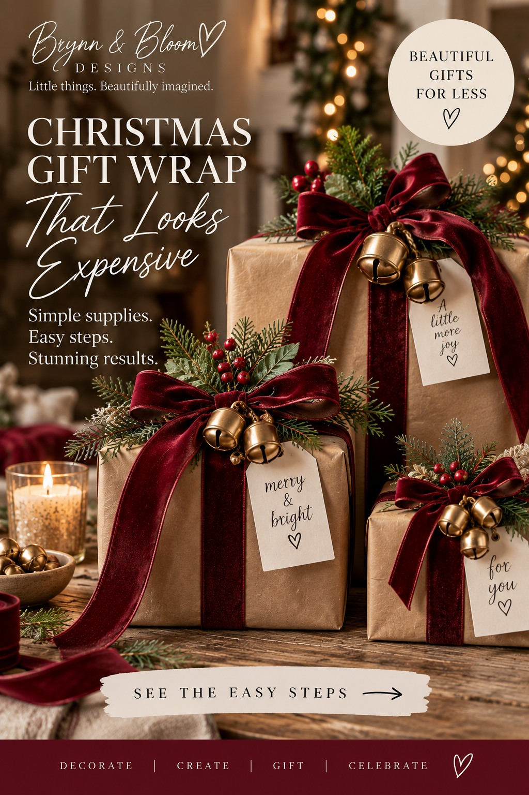

SEASONAL MAGIC / THE EASY DIY EDIT
Christmas Gift Wrap That Looks Boutique—Using Simple Supplies
Brown paper. One beautiful ribbon. A little greenery. A tiny bell. That’s the whole secret to a gift that feels thoughtfully styled, without buying expensive specialty wrapping paper.

Shop the budget-friendly supplies ↓
THE LITTLE TRANSFORMATION
Make the look in four steps
- Wrap it simply. Cover a gift box in plain kraft paper and fold the edges neatly.
- Add the statement ribbon. Cross a length of wide burgundy wired ribbon around the package and tie a generous bow.
- Tuck in greenery. Tuck a small faux evergreen sprig and a few artificial red berries beneath the ribbon; trim them to sit neatly on top of the gift.
- Finish with a bell and tag. Tie on two or three lightweight miniature gold bells and a blank ivory or kraft tag. Write a short message by hand.
The image is an AI-generated styling concept. To recreate the look, choose ribbon wide enough for generous bows, several miniature bells per gift, faux greenery, red berry accents and gift tags. Exact colors and proportions depend on your supplies. Reuse ribbon, bells and faux greenery when the gifts are opened.